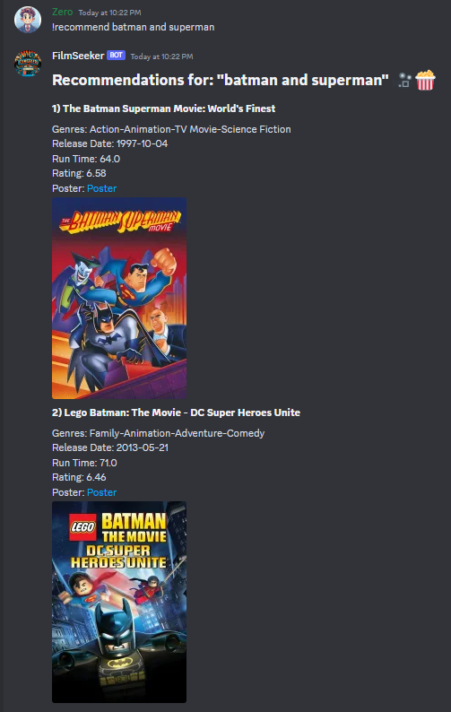

FilmSeeker uses NLP techniques to recommend movies based off of movie descriptions. This project was completed in a couple weeks. I took on this project to practice what I had learned in my NLP class December 2023. This project is capable of working with Discord's API to have a more friendly user-interface, but also works in Window's command prompt.